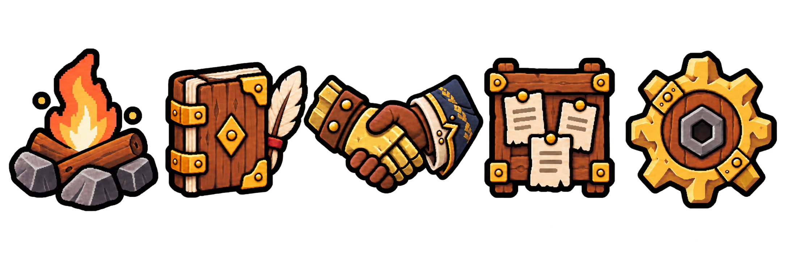
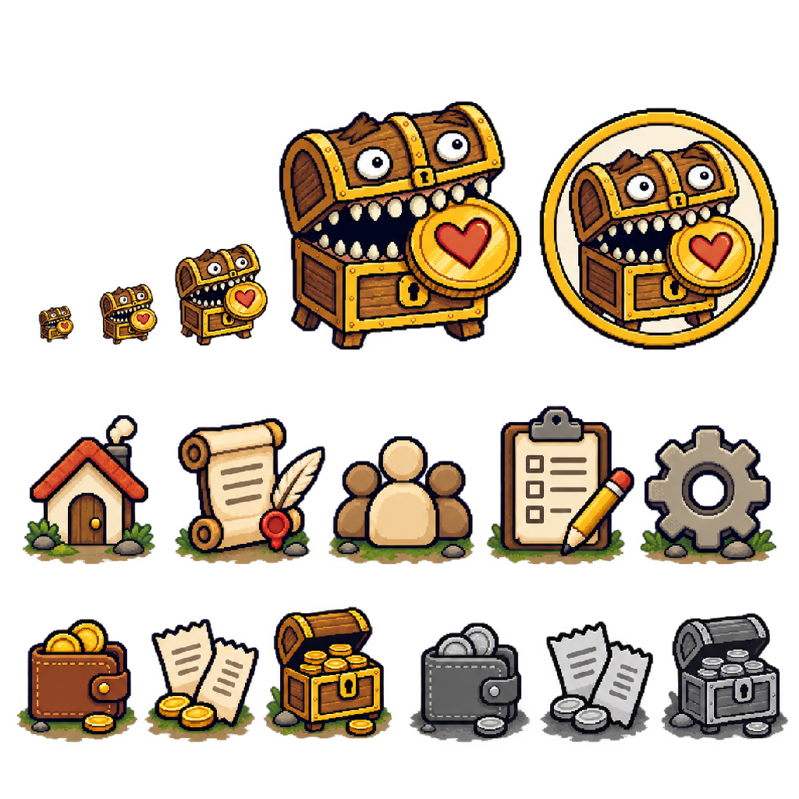
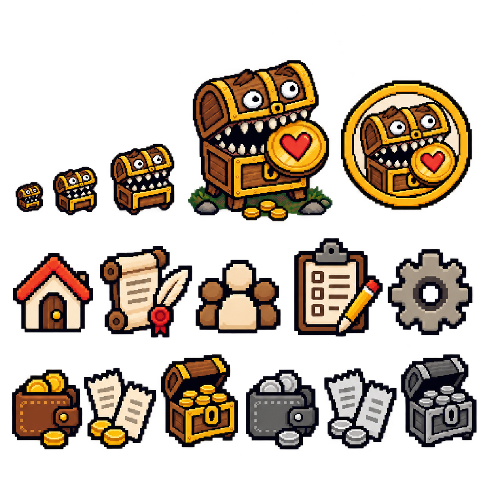
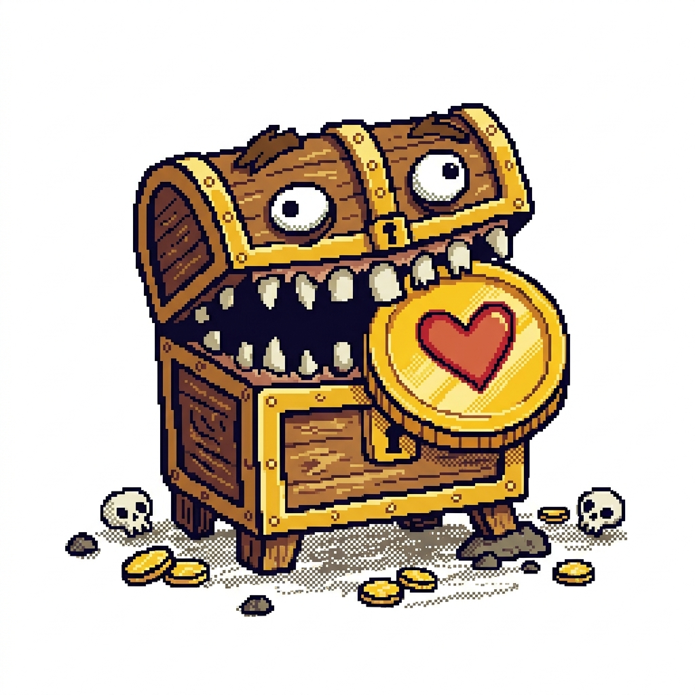
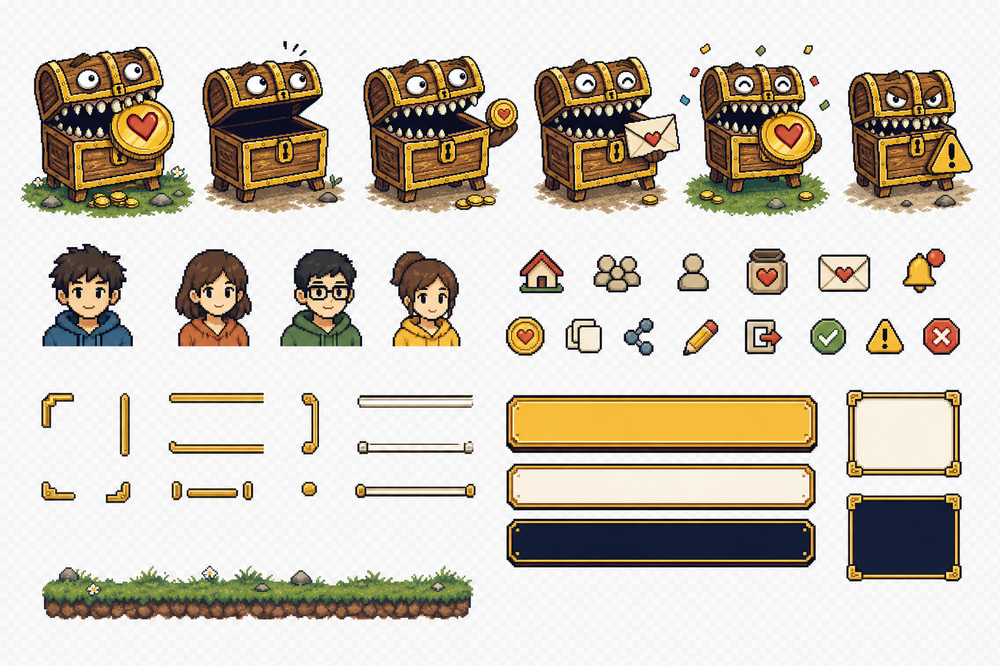
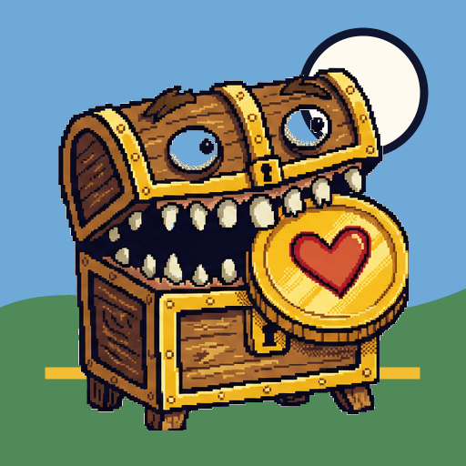
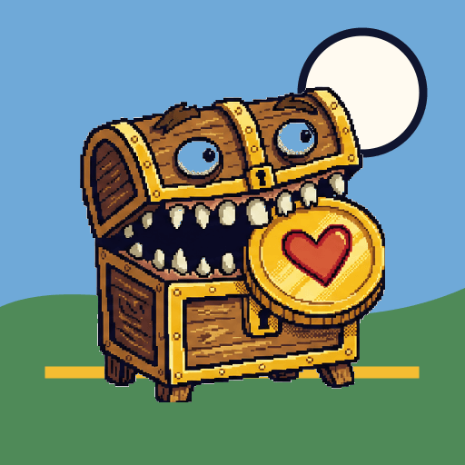

Icons · Gate A calibration review
Primary-navigation, Mode, record-expense Action, Event / Status, Install / Favicon, and Maskable directions are approved at exact hashes. Icons family calibration is complete; Gate A remains open for the other asset families. This page does not promote any icon to runtime.
Open approved record-expense Action direction · master SHA-256 5f261384aa4e5748a932ed692bc5dfa3bedd30e0c0892c02571a73dc31567680 · review-only, no runtime promotion
Replacement calibration candidate
Approved primary-navigation direction


The four unchanged navigation directions retain source SHA-256 3e9284c6666723c1d58a437063cd823bfee62d5acfdf682eaf54d5123c618cea; selected Tasks source A is locked at SHA-256 3cb0cfd4d0b91e1e58f09ad69777dc72ce89944fc982a3c46c12817e68b72856. Their approved 192 × 192 masters and direct 48 × 48 optical exports are recorded in icon-optical-evidence.manifest.json.
Earlier rejected candidate · audit control


Canonical source and runtime controls

icon.png
icons-ui.png

Small-size optical check
Grayscale distinction
Maskable safe-zone inspection
Named future consumers
PWA install icons, favicon, five primary navigation entries, record-expense action, personal/shared/pooled mode badges, and expense/contribution/reimbursement/shortfall/return/settlement/correction/lock/offline event types.
Live-HTML boundary
Critical controls and financial event rows keep visible text. Icons never provide the only action name, mode, event type, status, or accounting meaning; mode/event distinction cannot depend on hue alone.
Proposed staged filenames and canvases
icons/install/icon-192.png· 192 × 192 opaque fieldicons/install/icon-512.png· 512 × 512 opaque fieldicons/install/icon-maskable-192.png· 192 × 192 safe-zone compositionicons/install/icon-maskable-512.png· 512 × 512 safe-zone compositionicons/install/favicon-16.png· 16 × 16 simplified silhouetteicons/install/favicon-32.png· 32 × 32 simplified silhouetteicons/ui/nav-home.png,nav-adventure-log.png,nav-guild.png,nav-tasks.png,nav-settings.png· 48 × 48 transparent eachicons/ui/action-record-expense.png· 48 × 48 transparenticons/ui/mode-personal.png,mode-shared.png,mode-pooled.png· 48 × 48 transparent; silhouette-distincticons/ui/event-expense.png,event-contribution.png,event-reimbursement.png,event-shortfall.png,event-return.png,event-settlement.png,event-correction.png· 48 × 48 transparent eachicons/ui/status-lock.png,status-offline.png· 48 × 48 transparent each
All paths are relative to docs/design/assets/approved/page-visual-v1/ and remain staged outside runtime during Phase 1.
Self-check findings
- The approved personal wallet, shared receipts, and pooled open-chest directions use substantially higher pixel density, smaller deliberate clusters, nuanced limited ramps, broken highlights, and V11-like hand-drawn irregularity.
- The 16px and 32px directions intentionally simplify the body and omit the heart coin while retaining the face/chest silhouette.
- Navigation and mode concepts use no scenic base; the detailed wallet, overlapping receipts, and open chest remain distinct from one another.
- The five primary-navigation meanings and their visual direction are approved: campfire, travel journal, warrior/mage handshake, quest board, and repaired gear.
- The selected Tasks refinement is candidate A: a thicker timber contract board with brass corners, layered notices, and a red wax-seal focal point.
- The three approved mode silhouettes remain distinguishable in grayscale; their exact individual 192 × 192 masters and 48 × 48 exports are recorded in
icon-optical-evidence.manifest.json. - The approved record-expense Action direction uses a quill writing on one loose ledger page with a subordinate coin; its 192 × 192 master, 48 px preview, and grayscale evidence are locked at SHA-256
5f261384aa4e5748a932ed692bc5dfa3bedd30e0c0892c02571a73dc31567680. - The dedicated Maskable A composition is approved at its exact source, 512, and 192 hashes with defining anatomy inside the live 80% inspection guide.
Decision: retain all approved Icons directions and exact optical hashes. Gate A remains open for the other asset families; do not create staged complete families or promote runtime assets yet.